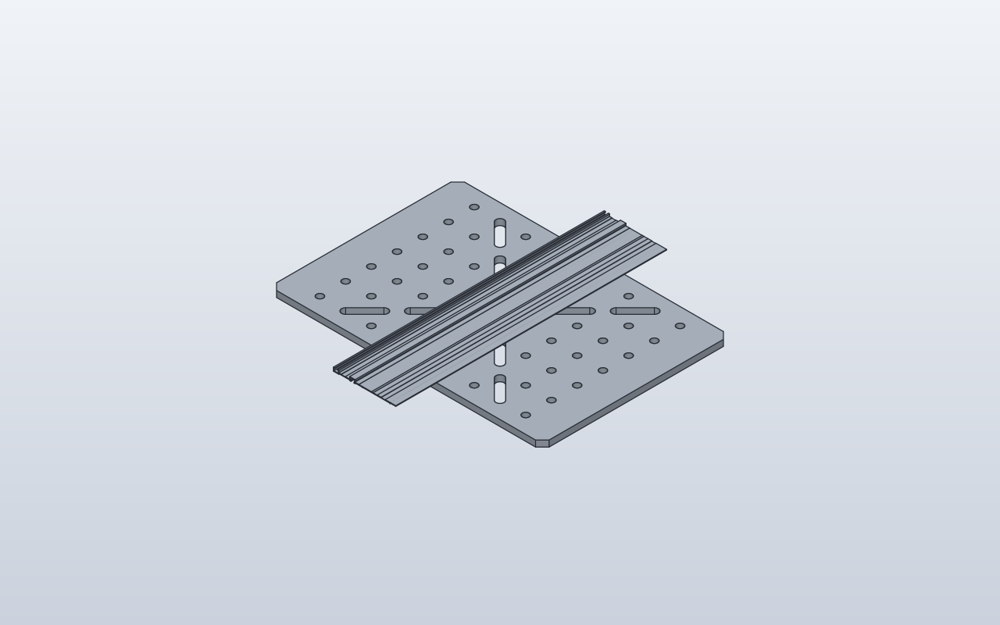
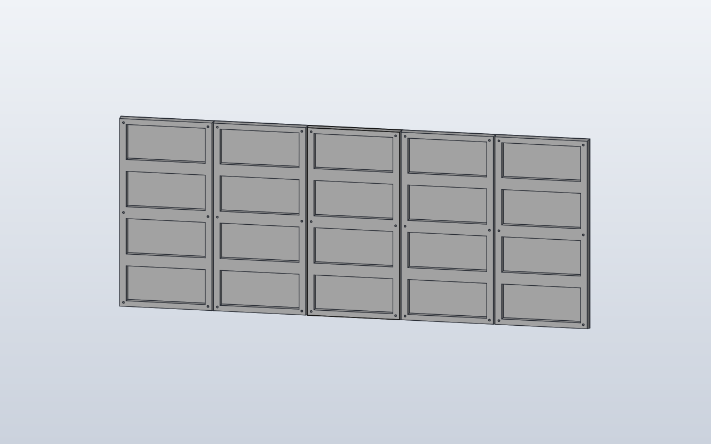

Native verified
Simple MFT
805 × 555 mm reusable worktop with a 9 × 7 dog-hole grid and eight native clamp slots
805 × 555 × 18 mm; 59 × Ø20; nominal 9 × 7 at 76 mm; 8 Slots ≈104 × 24 mm
Explore model →Full designs and nested native assemblies built from reusable components.
805 × 555 mm reusable worktop with a 9 × 7 dog-hole grid and eight native clamp slots
805 × 555 × 18 mm; 59 × Ø20; nominal 9 × 7 at 76 mm; 8 Slots ≈104 × 24 mm
Explore model →
Reusable Simple MFT worktop with an 800 mm Festool-profile GuideRail
805 × 555 mm worktop; shared worktop thickness 18 mm; Festool GuideRail 800 mm
Explore model →
Five shared native HUB75 occurrences with two 180° rotations
Five 159.70 × 319.71 × 14.50 mm panels; X pitch 160 mm
Explore model →
Parametrized 12 mm plywood box, eight brackets and one GlassStrip type
Outer 868 × 386 mm; 12 mm ply, 9 mm rear; roof 10/1 mm overhang; eight brackets
Explore model →